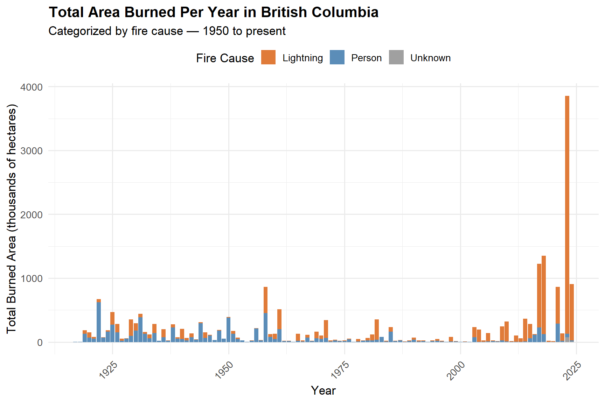
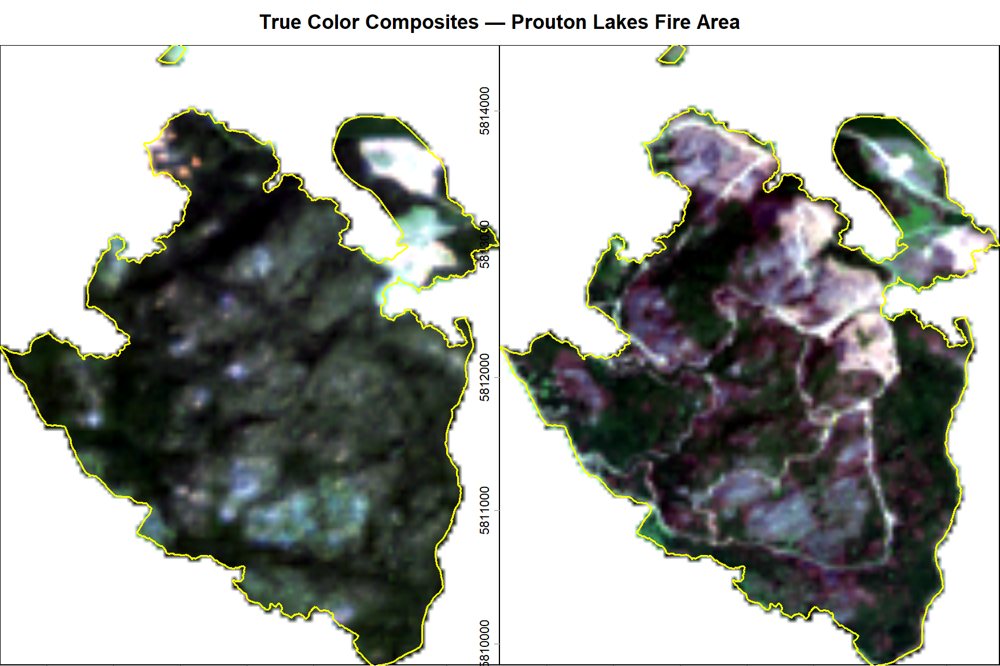
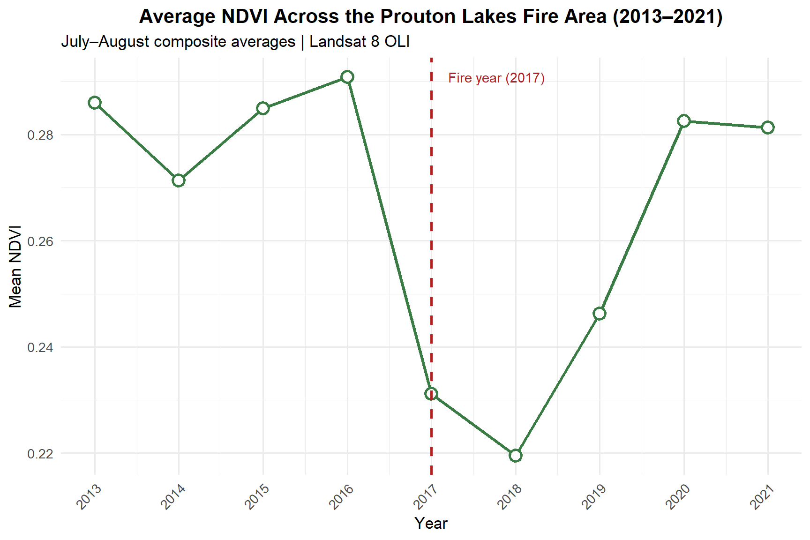
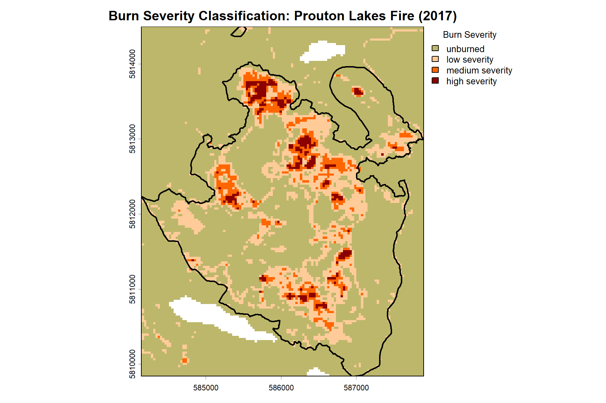
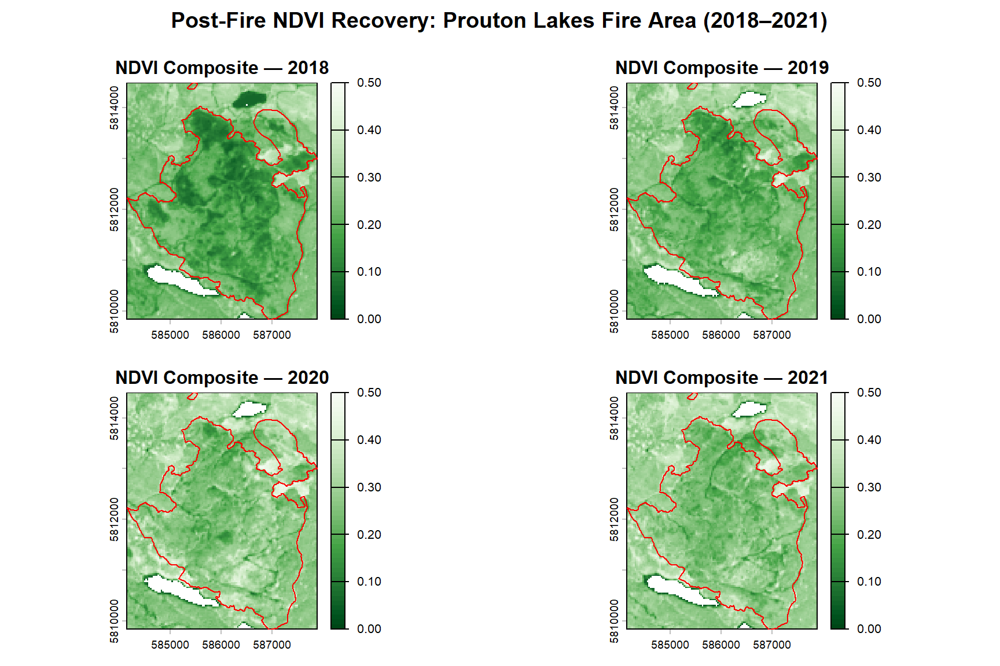
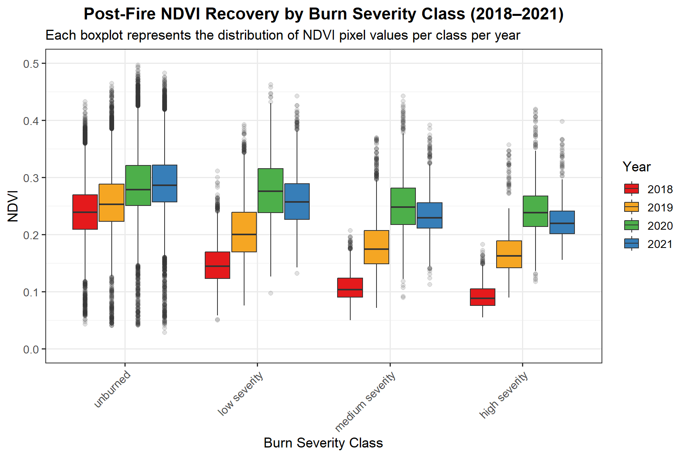

Wildfire Burn Severity and Post-Fire Vegetation Recovery
A Landsat 8 Time-Series Analysis of the 2017 Prouton Lakes Fire, British Columbia
Project Overview
The summer of 2017 was one of the most destructive wildfire seasons in British Columbia’s recorded history, with over 1.2 million hectares burned, approximately 65,000 people displaced, and an estimated $649 million spent on fire suppression. This project focuses on the Prouton Lakes fire (Fire ID: C30870), which burned part of the Alex Fraser Research Forest near Williams Lake, BC — situated on the traditional, ancestral, and unceded territory of the T’exelcemc, Xatsu’ll, and Esket First Nations.
The analysis addresses two interconnected questions:
How severe was the burn? Using the delta Normalized Burn Ratio (dNBR) derived from Landsat 8 imagery, burn severity is classified across four categories, from unburned to high severity and mapped spatially across the fire perimeter.
How has vegetation recovered since the fire? Using NDVI time-series composites from 2018 to 2021, post-fire vegetation recovery is tracked and compared across burn severity classes.
This type of analysis is directly applicable to forest ecosystem monitoring, wildfire impact assessment, and climate resilience planning, all of which are growing priorities for land managers and environmental consultants in British Columbia.
Data Sources
| Dataset | Description | Source |
|---|---|---|
| Landsat 8 OLI Collection 2 Level-2 | Surface reflectance time-series, July–August 2013–2021 | USGS Earth Explorer |
| BC Historical Fire Perimeters | Polygon shapefile of historical wildfire boundaries | BC Data Catalogue |
Landsat 8 Bands Used:
| Band | Name | Wavelength (μm) | Resolution |
|---|---|---|---|
| Band 2 | Blue | 0.45–0.51 | 30 m |
| Band 3 | Green | 0.53–0.59 | 30 m |
| Band 4 | Red | 0.64–0.67 | 30 m |
| Band 5 | Near Infrared (NIR) | 0.85–0.88 | 30 m |
| Band 6 | SWIR 1 | 1.57–1.65 | 30 m |
| Band 7 | SWIR 2 | 2.11–2.29 | 30 m |
Packages
library(sf) # Vector data handling
library(dplyr) # Data manipulation
library(ggplot2) # Data visualization
library(terra) # Raster data processing
library(stringr) # String manipulation
library(lubridate) # Date parsing
library(tmap) # Thematic mapping
library(purrr) # Functional programming tools
library(tidyr) # Data tidyingHistorical Wildfire Context in British Columbia
Before focusing on the Prouton Lakes fire, it is important to understand the broader wildfire context in BC. This section uses the provincial historical fire perimeters dataset to characterize the 2017 fire season and situate the Prouton Lakes fire within it.
# Loading the BC historical fire perimeters shapefile
fire_shp <- st_read(fire_shp_path, quiet = TRUE)
# Creating a non-spatial data frame for fast tabular summaries
fire_df <- st_drop_geometry(fire_shp) %>%
mutate(SIZE_HA = as.numeric(SIZE_HA))# Filtering to 2017 fire season
fires_2017 <- fire_df %>% filter(FIRE_YEAR == 2017)
n_fires_2017 <- nrow(fires_2017)
total_area_2017 <- sum(fires_2017$SIZE_HA, na.rm = TRUE)
# Three largest fires in 2017
top3_2017 <- fires_2017 %>%
arrange(desc(SIZE_HA)) %>%
slice_head(n = 3) %>%
select(FIRE_NO, FIRE_CAUSE, SIZE_HA)
# Prouton Lakes fire specifically
prouton_stats <- fire_df %>%
filter(FIRE_NO == "C30870") %>%
select(FIRE_NO, SIZE_HA)
# Annual burned area summarized by fire cause (for bar plot)
burned_per_year <- fire_df %>%
group_by(FIRE_YEAR, FIRE_CAUSE) %>%
summarise(total_area = sum(SIZE_HA, na.rm = TRUE), .groups = "drop") %>%
filter(!is.na(FIRE_YEAR))Annual Burned Area in BC by Fire Cause
ggplot(burned_per_year, aes(x = FIRE_YEAR, y = total_area / 1000, fill = FIRE_CAUSE)) +
geom_col() +
scale_fill_manual(
values = c("Lightning" = "#e07b39", "Person" = "#5b8db8", "Unknown" = "#a0a0a0"),
na.value = "#d0d0d0"
) +
labs(
title = "Total Area Burned Per Year in British Columbia",
subtitle = "Categorized by fire cause — 1950 to present",
x = "Year",
y = "Total Burned Area (thousands of hectares)",
fill = "Fire Cause"
) +
theme_minimal(base_size = 13) +
theme(
axis.text.x = element_text(angle = 45, hjust = 1),
plot.title = element_text(face = "bold"),
legend.position = "top"
)
Key Findings: 2017 Fire Season
- In 2017, 342 wildfires were recorded across British Columbia, burning a total of 1,222,205 hectares of land.
- The three largest fires of 2017 were:
| Fire ID | Cause | Area (ha) |
|---|---|---|
| C10784 | Lightning | 520885.2 |
| C50647 | Lightning | 239339.6 |
| K20637 | Person | 192016.5 |
- The Prouton Lakes fire (C30870) burned approximately 859.3 hectares, representing a relatively localized but well-documented fire with variable burn severity, making it well-suited for detailed remote sensing analysis.
Landsat 8 Pre-processing and Vegetation Index Calculation
Landsat 8 Collection 2 Level-2 surface reflectance products were used for this analysis. These products have been atmospherically corrected using the LaSRC algorithm, meaning pixel values represent bottom-of-atmosphere (BOA) reflectance and are directly comparable across time and space, a critical property for multi-temporal change detection.
Each product was processed through the following pipeline:
- Stack the seven surface reflectance bands into a single multi-layer raster
- Mask pixels flagged as non-clear in the
QA_PIXELlayer (retaining only pixels with QA value21824, indicating clear conditions) - Crop the masked stack to the Prouton Lakes fire extent
- Calculate NDVI and NBR for each cropped and masked product
- Save all outputs to disk for use in subsequent analysis steps
\[NDVI = \frac{NIR - Red}{NIR + Red}\]
\[NBR = \frac{NIR - SWIR2}{NIR + SWIR2}\]
# Loading the Prouton Lakes fire polygon
fire_shp_all <- st_read(fire_shp_path, quiet = TRUE)
prouton_fire_sf <- fire_shp_all %>% filter(FIRE_NO == "C30870")
prouton_fire_vect <- vect(prouton_fire_sf)
# Getting all Landsat product folders
product_folders <- list.dirs(path = landsat_path, recursive = FALSE, full.names = TRUE)
cat("Total Landsat products found:", length(product_folders), "\n")Total Landsat products found: 35 # Creating output subdirectories
sr_out <- file.path(output_path, "LC08_L2SP_048023_SR")
ndvi_out <- file.path(output_path, "LC08_L2SP_048023_NDVI")
nbr_out <- file.path(output_path, "LC08_L2SP_048023_NBR")
for (d in c(sr_out, ndvi_out, nbr_out)) {
if (!dir.exists(d)) dir.create(d, showWarnings = FALSE)
}
# Processing loop — iterates over all 35 Landsat products
for (folder in product_folders) {
productID <- basename(folder)
# Locating surface reflectance bands (B1–B7) and QA layer
sr_files <- list.files(folder, pattern = "SR_B[1-7]\\.TIF$",
full.names = TRUE, ignore.case = TRUE)
qa_files <- list.files(folder, pattern = "QA_PIXEL\\.TIF$",
full.names = TRUE, ignore.case = TRUE)
# Skipping incomplete products
if (length(sr_files) < 7 || length(qa_files) == 0) {
message("Skipping incomplete product: ", productID)
next
}
# Sorting bands in order (B1 to B7) to ensure consistent indexing
band_nums <- as.integer(str_extract(basename(sr_files), "(?<=SR_B)\\d"))
sr_files <- sr_files[order(band_nums)]
# Stacking bands and scaling to reflectance (0–1)
sr_stack <- rast(sr_files) / 10000
qa_rast <- rast(qa_files[1])
# Reprojecting fire vector to match raster CRS
prouton_fire_vect <- project(prouton_fire_vect, crs(sr_stack))
# Cloud masking: retaining only clear pixels (QA = 21824)
sr_masked <- ifel(qa_rast == 21824, sr_stack, NA)
# Cropping to the Prouton Lakes fire extent
sr_crop <- crop(sr_masked, prouton_fire_vect)
# Calculating spectral indices
# Band indices: B4 = Red, B5 = NIR, B7 = SWIR2
ndvi_r <- (sr_crop[[5]] - sr_crop[[4]]) / (sr_crop[[5]] + sr_crop[[4]])
nbr_r <- (sr_crop[[5]] - sr_crop[[7]]) / (sr_crop[[5]] + sr_crop[[7]])
# Writing outputs to disk
writeRaster(sr_crop, file.path(sr_out, paste0(productID, "_SR.tif")), overwrite = TRUE)
writeRaster(ndvi_r, file.path(ndvi_out, paste0(productID, "_NDVI.tif")), overwrite = TRUE)
writeRaster(nbr_r, file.path(nbr_out, paste0(productID, "_NBR.tif")), overwrite = TRUE)
}True Color Composites: Before and After the Fire
Comparing true color composites from before (July 7, 2015) and after (July 15, 2018) the fire provides immediate visual confirmation of the fire’s impact on the landscape. Healthy forest appears as deep green in the pre-fire image, while the post-fire image reveals large areas of exposed soil and dead vegetation.
# Helper function to locate a product folder by acquisition date
find_product_by_date <- function(products, date_str) {
match <- products[str_detect(products, date_str)]
if (length(match) == 0) return(NA_character_)
return(match[1])
}
# Helper function to build a true color RGB raster cropped to the AOI
build_truecolor <- function(folder, aoi_vect) {
if (is.na(folder) || is.null(folder)) return(NULL)
sr_files <- list.files(folder, pattern = "SR_B[2-4]\\.TIF$",
full.names = TRUE, ignore.case = TRUE)
band_nums <- as.integer(str_extract(basename(sr_files), "(?<=SR_B)\\d"))
sr_files <- sr_files[order(band_nums)]
if (length(sr_files) < 3) return(NULL)
rgb <- rast(sr_files) / 10000
aoi_proj <- project(aoi_vect, crs(rgb))
rgb <- crop(rgb, aoi_proj)
rgb <- mask(rgb, aoi_proj)
return(rgb)
}
pre_folder <- find_product_by_date(product_folders, "20150707")
post_folder <- find_product_by_date(product_folders, "20180715")
pre_rgb <- build_truecolor(pre_folder, prouton_fire_vect)
post_rgb <- build_truecolor(post_folder, prouton_fire_vect)
if (!is.null(pre_rgb) && !is.null(post_rgb)) {
old_par <- par(no.readonly = TRUE)
par(mfrow = c(1, 2), mar = c(3, 3, 3, 1), oma = c(0, 0, 2, 0))
plotRGB(pre_rgb, r = 3, g = 2, b = 1, stretch = "lin", axes = TRUE,
main = "Pre-Fire: July 7, 2015")
terra::lines(prouton_fire_vect, col = "yellow", lwd = 1.5)
plotRGB(post_rgb, r = 3, g = 2, b = 1, stretch = "lin", axes = TRUE,
main = "Post-Fire: July 15, 2018")
terra::lines(prouton_fire_vect, col = "yellow", lwd = 1.5)
mtext("True Color Composites — Prouton Lakes Fire Area",
side = 3, outer = TRUE, line = 0.5, font = 2, cex = 1.1)
par(old_par)
}
NDVI and NBR Yearly Composites
For each year between 2013 and 2021, a yearly composite was created by averaging all available NDVI and NBR values from July and August acquisitions. Using the summer growing season window ensures that inter-annual comparisons reflect vegetation productivity rather than seasonal phenological differences.
# Function to list index files, extract acquisition dates, and filter for Jul/Aug
get_composite_files <- function(folder_path, index_name) {
list.files(folder_path,
pattern = paste0("_", index_name, "\\.tif$"),
full.names = TRUE) %>%
tibble(file = .) %>%
mutate(
date_str = str_extract(basename(file), "\\d{8}"),
date = ymd(date_str),
year = year(date),
month = month(date)
) %>%
filter(month %in% c(7, 8)) %>%
select(file, year, month)
}
ndvi_info <- get_composite_files(ndvi_out, "NDVI")
nbr_info <- get_composite_files(nbr_out, "NBR")
# Grouping files by year
grouped_ndvi <- ndvi_info %>% group_by(year) %>% summarise(files = list(file), .groups = "drop")
grouped_nbr <- nbr_info %>% group_by(year) %>% summarise(files = list(file), .groups = "drop")
# Initializing results data frame
yearly_avg_ndvi_df <- data.frame(year = integer(), avg_ndvi = numeric())
# Loop: creating yearly composites and extracting mean NDVI across fire area
for (i in 1:nrow(grouped_ndvi)) {
y <- grouped_ndvi$year[i]
ndvi_year_files <- grouped_ndvi$files[[i]]
nbr_year_files <- grouped_nbr$files[[i]]
# Stacking all images for the year and computing pixel-wise mean
ndvi_composite <- app(rast(ndvi_year_files), fun = "mean", na.rm = TRUE)
nbr_composite <- app(rast(nbr_year_files), fun = "mean", na.rm = TRUE)
# Saving yearly composites
writeRaster(ndvi_composite,
file.path(composite_dir, paste0("NDVI_YearlyComposite_", y, ".tif")),
overwrite = TRUE)
writeRaster(nbr_composite,
file.path(composite_dir, paste0("NBR_YearlyComposite_", y, ".tif")),
overwrite = TRUE)
# Extracting spatially averaged NDVI across the fire perimeter
avg_ndvi <- global(ndvi_composite, fun = "mean", na.rm = TRUE)
yearly_avg_ndvi_df <- yearly_avg_ndvi_df %>%
add_row(year = y, avg_ndvi = avg_ndvi$mean)
}
yearly_avg_ndvi_df$year <- as.integer(yearly_avg_ndvi_df$year)NDVI Time-Series Across the Prouton Lakes Fire Area
ggplot(yearly_avg_ndvi_df, aes(x = year, y = avg_ndvi, group = 1)) +
geom_line(color = "#3a7d44", linewidth = 1.2) +
geom_point(color = "#3a7d44", size = 3.5, shape = 21,
fill = "white", stroke = 1.5) +
geom_vline(xintercept = 2017, linetype = "dashed",
color = "firebrick", linewidth = 0.9) +
annotate("text", x = 2017.2, y = max(yearly_avg_ndvi_df$avg_ndvi),
label = "Fire year (2017)", color = "firebrick",
hjust = 0, size = 3.8) +
labs(
title = "Average NDVI Across the Prouton Lakes Fire Area (2013–2021)",
subtitle = "July–August composite averages | Landsat 8 OLI",
x = "Year",
y = "Mean NDVI"
) +
scale_x_continuous(breaks = yearly_avg_ndvi_df$year) +
theme_minimal(base_size = 13) +
theme(
plot.title = element_text(face = "bold", hjust = 0.5),
axis.text.x = element_text(angle = 45, hjust = 1)
)
The time series reveals a clear pre-fire baseline (2013–2016), a sharp decline in vegetation productivity following the 2017 fire, and a gradual recovery trajectory through 2021. This pattern is consistent with known post-fire succession dynamics in BC’s interior forests, where initial recolonization by grasses and shrubs precedes the slower return of coniferous canopy cover.
Burn Severity Classification
Burn severity was estimated using the delta Normalized Burn Ratio (dNBR), calculated as the difference between pre-fire (2015) and post-fire (2018) NBR composites:
\[dNBR = NBR_{prefire} - NBR_{postfire}\]
Higher dNBR values indicate greater spectral change between the two time periods, which corresponds to more severe burning. The following thresholds were applied:
| dNBR Range | Burn Severity Class |
|---|---|
| −0.2 to 0.15 | Unburned |
| 0.15 to 0.25 | Low severity |
| 0.25 to 0.30 | Medium severity |
| 0.30 to 1.00 | High severity |
# Loading pre- and post-fire NBR composites
nbr_pre <- rast(file.path(composite_dir, "NBR_YearlyComposite_2015.tif"))
nbr_post <- rast(file.path(composite_dir, "NBR_YearlyComposite_2018.tif"))
# Calculating dNBR
dnbr_rast <- nbr_pre - nbr_post
names(dnbr_rast) <- "dNBR"
# Saving dNBR raster
writeRaster(dnbr_rast,
file.path(composite_dir, "dNBR_2015_2018.tif"),
overwrite = TRUE)
# Applying reclassification matrix to assign severity classes
reclass_matrix <- matrix(
c(-Inf, 0.15, 1,
0.15, 0.25, 2,
0.25, 0.30, 3,
0.30, Inf, 4),
ncol = 3, byrow = TRUE
)
severity_rast <- classify(dnbr_rast, reclass_matrix, include.lowest = TRUE)
names(severity_rast) <- "Burn_Severity"
# Assigning descriptive factor levels to severity classes
levels(severity_rast) <- data.frame(
id = c(1, 2, 3, 4),
label = c("unburned", "low severity", "medium severity", "high severity")
)
# Saving the classified raster
writeRaster(severity_rast,
file.path(composite_dir, "Burn_Severity_Classes_Factor.tif"),
overwrite = TRUE, datatype = "INT1U")Burn Severity Map
severity_colors <- c(
"unburned" = "#bdb76b",
"low severity" = "#ffcc99",
"medium severity" = "#ff6600",
"high severity" = "#8b0000"
)
# Ensuring fire perimeter vector is available
if (!exists("prouton_fire_vect")) {
prouton_fire_sf <- st_read(fire_shp_path, quiet = TRUE) %>% filter(FIRE_NO == "C30870")
prouton_fire_vect <- vect(prouton_fire_sf)
}
plot(severity_rast,
col = severity_colors,
main = "Burn Severity Classification: Prouton Lakes Fire (2017)",
plg = list(title = "Burn Severity"),
axes = TRUE,
box = TRUE)
terra::lines(prouton_fire_vect, col = "black", lwd = 2)
The burn severity map shows considerable spatial heterogeneity within the fire perimeter, with a mix of unburned patches, low severity areas, and concentrated zones of high severity burning. This pattern is characteristic of mixed-severity fires in BC’s interior forests, where topography, fuel moisture, and wind interact to produce variable burn intensities across the landscape.
Post-Fire Vegetation Recovery
Understanding how vegetation recovers across different burn severity classes is critical for forest managers and ecosystem monitoring programs. High severity areas lose more biomass and take longer to recover than low severity or unburned areas. This section quantifies those recovery trajectories using NDVI values extracted for each burn severity class from 2018 to 2021.
# Converting burn severity raster to dissolved polygons (one per class)
severity_polygons <- terra::as.polygons(severity_rast, dissolve = TRUE)
names(severity_polygons) <- "Burn_Severity"
# Extracting all NDVI pixel values for each post-fire year and severity class
extracted_data_list <- lapply(c(2018, 2019, 2020, 2021), function(y) {
ndvi_rast <- terra::rast(file.path(composite_dir,
paste0("NDVI_YearlyComposite_", y, ".tif")))
ndvi_extract <- terra::extract(ndvi_rast, severity_polygons,
ID = FALSE, fun = NULL, bind = TRUE)
as.data.frame(ndvi_extract, geom = FALSE) %>%
rename(Burn_Severity = 1, NDVI_Value = 2) %>%
filter(!is.na(NDVI_Value)) %>%
mutate(Year = y)
})
# Combining all years and converting severity to an ordered factor
recovery_df <- bind_rows(extracted_data_list) %>%
mutate(
Burn_Severity = case_when(
Burn_Severity == 1 ~ "unburned",
Burn_Severity == 2 ~ "low severity",
Burn_Severity == 3 ~ "medium severity",
Burn_Severity == 4 ~ "high severity",
TRUE ~ as.character(Burn_Severity)
),
Burn_Severity = factor(
Burn_Severity,
levels = c("unburned", "low severity", "medium severity", "high severity"),
ordered = TRUE
),
Year = factor(Year)
)Yearly NDVI Composites: 2018–2021
old_par <- par(no.readonly = TRUE)
par(mfrow = c(2, 2), mar = c(3, 3, 3, 1), oma = c(0, 0, 2.5, 0))
for (y in c(2018, 2019, 2020, 2021)) {
ndvi_rast <- terra::rast(file.path(composite_dir,
paste0("NDVI_YearlyComposite_", y, ".tif")))
plot(ndvi_rast,
range = c(0, 0.5),
col = hcl.colors(50, palette = "Greens"),
main = paste("NDVI Composite —", y),
axes = TRUE)
terra::lines(prouton_fire_vect, col = "red", lwd = 1.2)
}
mtext("Post-Fire NDVI Recovery: Prouton Lakes Fire Area (2018–2021)",
side = 3, outer = TRUE, line = 0.8, cex = 1.2, font = 2)
par(old_par)NDVI Distribution by Burn Severity Class
ggplot(recovery_df, aes(x = Burn_Severity, y = NDVI_Value, fill = Year)) +
geom_boxplot(position = position_dodge(width = 0.8),
outlier.alpha = 0.15,
linewidth = 0.4) +
scale_fill_manual(
values = c("2018" = "#e41a1c",
"2019" = "#f5a623",
"2020" = "#4daf4a",
"2021" = "#377eb8")
) +
scale_y_continuous(limits = c(0, 0.5)) +
labs(
title = "Post-Fire NDVI Recovery by Burn Severity Class (2018–2021)",
subtitle = "Each boxplot represents the distribution of NDVI pixel values per class per year",
x = "Burn Severity Class",
y = "NDVI",
fill = "Year"
) +
theme_bw(base_size = 13) +
theme(
plot.title = element_text(face = "bold", hjust = 0.5),
axis.text.x = element_text(angle = 45, hjust = 1),
legend.position = "right"
)
The boxplots confirm a clear and ecologically meaningful pattern: high severity burn areas show the lowest NDVI values in 2018 and the slowest recovery trajectory through 2021. Unburned and low severity areas maintain relatively higher NDVI throughout the post-fire period, consistent with minimal disruption to the existing vegetation structure. The narrowing gap between severity classes from 2018 to 2021 suggests active but gradual recovery, with early successional species beginning to re-establish across the burned landscape.
Reflection and Future Directions
This analysis successfully quantified the spatial distribution of burn severity across the Prouton Lakes fire and tracked post-fire vegetation recovery using a multi-year NDVI time series. Several methodological refinements and extensions could strengthen this work in a professional or research context:
Methodological refinements:
In the pre-processing step, pixels were masked to the fire boundary rather than cropped to the bounding extent. While this produced more precise spatial outputs, a simple crop to the bounding box would have been computationally faster for exploratory work. Future implementations could offer both approaches depending on the use case.
The dNBR classification thresholds used here are based on standard literature values. Field-validated severity thresholds specific to BC’s interior forests could improve classification accuracy and would be a meaningful addition for any operational application.
Cloud masking was performed using a single QA flag value (21824 = clear conditions). Incorporating additional masking for cloud shadow and snow could further improve data quality, particularly for the earlier years in the time series.
Potential extensions:
- Extending the time series beyond 2021 would allow monitoring of longer-term recovery trajectories, including the potential return of coniferous canopy cover.
- Incorporating Sentinel-2 imagery (10 m resolution) alongside Landsat 8 (30 m) could provide finer spatial detail for burn severity mapping.
- Overlaying the burn severity map with ecosystem classification layers (e.g., BEC zones) would allow recovery rates to be compared across different forest types.
- This analysis framework is directly transferable to other BC wildfires, including the 2023 season, which surpassed 2017 as the most severe on record.
Analysis conducted using R (terra, sf, ggplot2, dplyr). Data sourced from USGS Earth Explorer and the BC Data Catalogue.